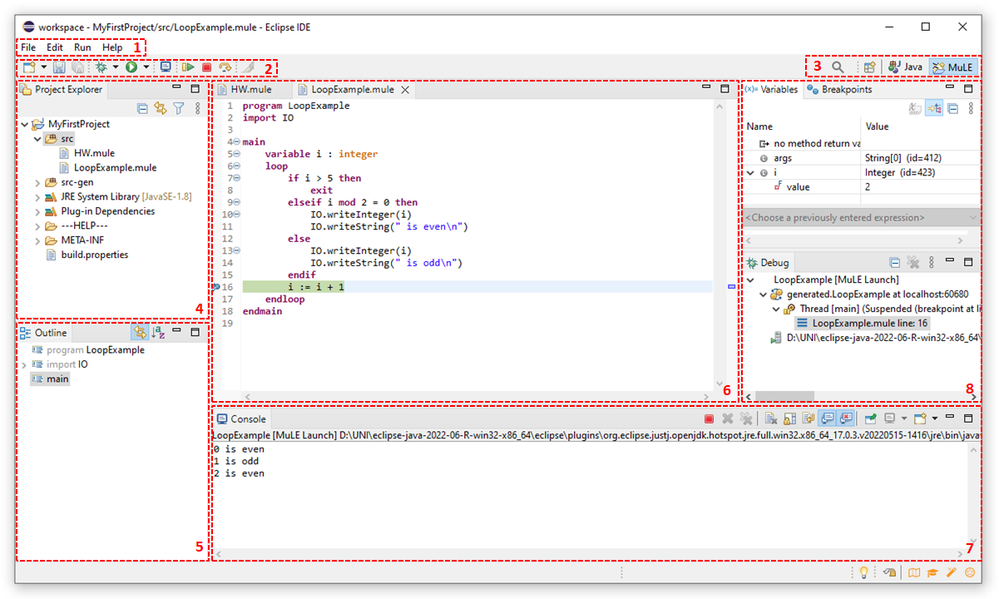
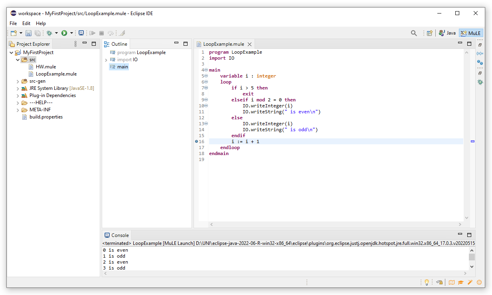

This page explains the user interface as defined by the MuLE Eclipse perspective.
- What are Eclipse views and perspectives?
Let us first explain the concepts of views and perspectives.
A view is an element of the user interface with a specific task. For example, the editor view allows us to write and edit our code while the project explorer view allows us to browse the folders and files of the project.
A perspective is a collection of views relevant in a specific context, e.g. the MuLE perspective has a selection of views which we deemed most necessary. Furthermore, views are ordered in a specific layout within a perspective.
Back to top
- Eclipse MuLE perspective
The MuLE perspective attempts to simplify the Eclipse user interface by hiding many controls and options, which are not necessary for beginner programmers.
However, these changes are propagated to other perspectives to a certain degree, so we advice you to use a separate Eclipse for programming with MuLE.
Let us take a look at the MuLE perspective:

-
This sector contains various option menus.
File allows you to create new files, folder, projects, etc. Furthermore, you can modify file properties and import or export projects here.
Edit contains your usual undo/redo/cut/copy/paste options.
Run contains execution options such as run or debug.
Help allows you to open this very website directly from Eclipse, check for updates or modify preferences of Eclipse.
-
This sector contains quick access buttons to specific functions, such as new, save, run and debug buttons.
-
You can search for Eclipse specific commands by clicking on the magnifying glass and manage perspectives here.
As we can see, we have Java and MuLE perspectives open right now, with MuLE being the active perspective.
By default, you will only see icons without any text here, to display the names of the perspectives as is shown in the screenshot, you have to right click on any perspective and click on Show Text.
You can open and close perspectives, switch between them and reset them here.
-
This is your project explorer, you can browse your projects here, open included files, create or delete files, etc.
-
This is the outline tree view, it gives us a structured view of our program, which can be helpful when we have big programs with many type declarations and operations.
You can navigate to specific program elements by clicking on nodes in this tree. You can also unwrap imported libraries and declared types here.
-
This is your source code editor where you write and edit the code of your programs.
As you can see, we can have several files open at the same time.
The editor supports syntax highlighting, keywords are magenta, types are orange, string literals are blue, comments are green, everything else is black.
You can auto format you code by pressing Ctrl+Shift+F.
You can invoke content assist function by pressing Ctrl+Space.
-
This is the console view, any standard input/output functionality, e.g. IO.writeString("Hello, world!"), is performed here.
Runtime error messages are also displayed here.
-
An finally we have a sector with three views which are used in the context of debugging, which is actually displayed in the screenshot.
To start debugging, place a breakpoint in the editor view by double clicking on a line number. Then execute the program using the debug button which lookc like a green bug.
Once the program reaches the line with a breakpoint, its execution halts and you can view the current values of the variables, execute lines step-by-step, or terminate the program altogether.
The Variables view allows you to inspect the current values of the variables.
The Breakpoints view allows you to manage your breakpoints, e.g. navigate between them, deactivate or delete them.
The Debug view shows you currently running programs and allows you to terminate them. Furthermore, you can inspect the state of operations on the call stack here.
Back to top
- Customizing and resetting perspective
You can rearrange, resize and minimize views, for example by dragging them to another position if you don't like the current layout.
In the screenshot below we have minized the views related to debugging and moved the outline tree to a different position.
If you want to reset the perspective to its preconfigured state, simply right click on the MuLE perspective and select Reset.
The Run options menu is automatically hidden after resetting the MuLE perspective.

Back to top